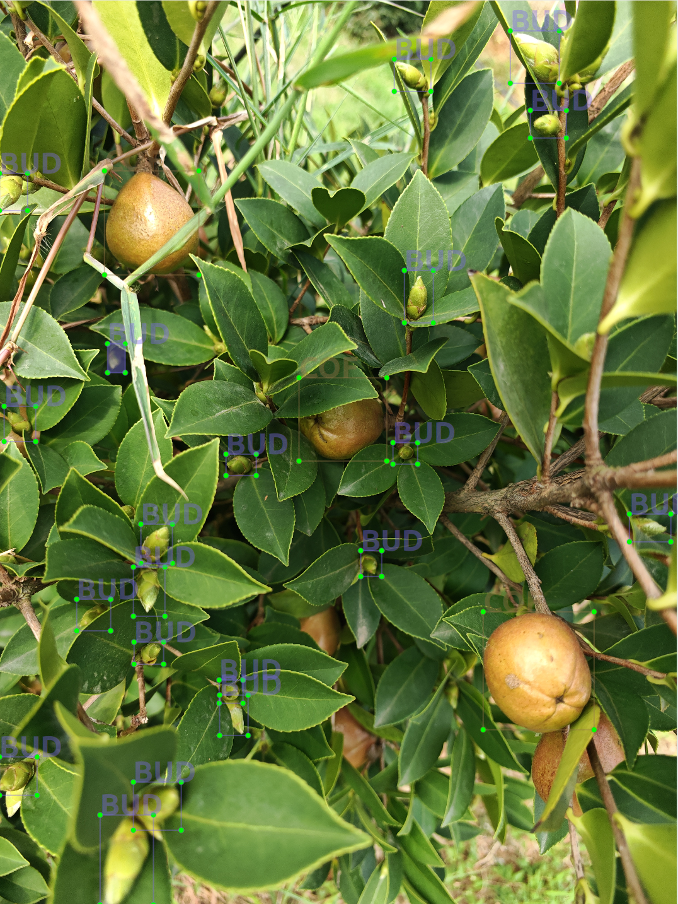

INTELLIGENT ORCHARD HARVESTING
林果采收
智能感知与装备创新组
面向复杂果园环境，探索机器如何感知、理解并自主作业。聚焦农业智能感知、农业机器人与智能采收装备关键技术。
VISION SYSTEMACTIVE
FRUIT_01
CONF 98.6%
CONF 98.6%
AI
DEPTH0.82 mSTATUSREADY
WHAT WE DO
从感知，到决策，
再到智能采收。
我们关注林果采收场景中的真实问题，以智能感知为基础，以机器人与智能装备为载体，推动农业作业向自动化、智能化发展。
RESEARCH AREAS
研究方向
PEOPLE
一起解决真实的农业问题
郑
PRINCIPAL MEMBER
LECTURER · MASTER'S SUPERVISOR
郑洲洲
Zheng Zhouzhou, Ph.D.
工学博士，讲师，硕士生导师。2025年6月毕业于西北农林科技大学机械与电子工程学院农业机械化工程专业，2024年获国家留学基金委资助赴加拿大麦吉尔大学生物资源工程系联合培养。主要从事林果采收机器人、果园信息感知技术、果树表型解析与油茶振动收获机理等方向研究。
Orchard Harvesting RobotsOrchard PerceptionSmart AgricultureVibration Harvesting
ACADEMIC PROFILE
个人简介与学术成果
10+SCI Papers
1000+Citations
20H-index
7+Research Projects
CURRENT POSITION
湖南农业大学机电工程学院
2025.07—至今 专任教师 / 讲师
EDUCATION
- 2021.09—2025.06 西北农林科技大学 · 农业机械化工程 · 博士
- 2023.12—2024.12 加拿大麦吉尔大学 · 生物资源工程系 · 博士联合培养
TEACHING
智能农机装备、机器视觉、机械故障诊断与决策
RESEARCH INTERESTS
研究方向
- 林果采收机器人
- 果园信息感知技术
- 果树表型解析
- 油茶振动收获机理
ACADEMIC SERVICE
Plant Phenomics 青年编委；Agronomy、Sustainability 客座主编；并担任多本农业工程、人工智能与智能制造领域 SCI 期刊审稿专家。
SELECTED PROJECTS
科研项目
湖南省自然科学基金青年基金项目2026.01—2028.12 · 主持2026JJ60165
湖南省教育厅优秀青年项目2025.11—2027.12 · 主持25B0268
岳麓山实验室联合引进人才项目2026.01—2027.12 · 主持2025RC2065
国家建设高水平大学公派联合培养博士研究生项目2023.12—2024.12 · 主持202306300107
国家重点研发计划课题2022.01—2027.12 · 参与2022YFD2200404
国家自然科学基金面上项目2024.01—2027.12 · 参与32372009
SELECTED PUBLICATIONS
代表性论文
- Autonomous Navigation of Orchard Harvesting Robot via Light-weight Salient Object Detection.Smart Agricultural Technology, 2026: 102094.
- AGHRNet: An attention ghost-HRNet for confirmation of catch-and-shake locations in jujube fruits vibration harvesting.Computers and Electronics in Agriculture, 2023, 210: 107921.
- A novel jujube tree trunk and branch salient object detection method for catch-and-shake robotic visual perception.Expert Systems with Applications, 2024, 251: 124022.
- Graph Transformer with spatial-spectral features fusion for hyperspectral image classification.Expert Systems with Applications, 2025, 264: 125962.
- Characterising vibration patterns of winter jujube trees to optimise automated fruit harvesting.Biosystems Engineering, 2024, 248: 255–268.
- Autonomous navigation method of jujube catch-and-shake harvesting robot based on convolutional neural networks.Computers and Electronics in Agriculture, 2023, 215: 108469.
HONORS & AWARDS
个人获奖
第四届湖南省大学生节能减排大赛省一等奖指导教师
西北农林科技大学优秀博士学位论文
博士研究生国家奖学金、西北农林科技大学优秀学生干部
国家留学基金委公派留学奖学金
硕士研究生国家奖学金
FEATURED WORKS
代表性成果

PROJECT 01PROJECT 02
98.6%
LATEST NEWS
团队动态
LET'S CONNECT
让智能装备
走进真实果园。
欢迎围绕农业智能装备、智能感知、农业机器人与林果智能采收开展交流与合作。
Contact Us↗